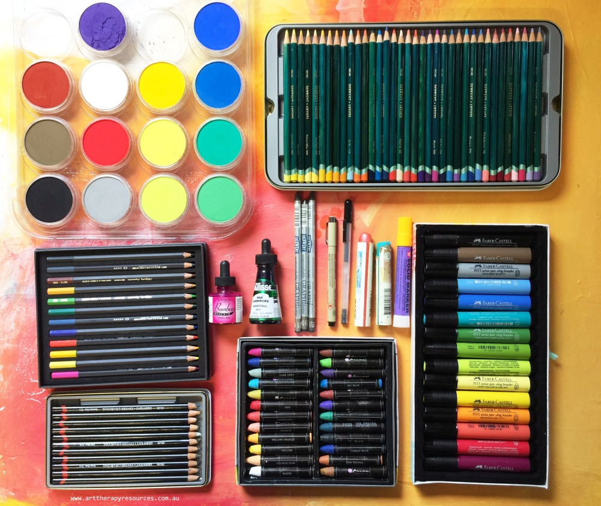

Fundamentals
Art comes in different kinds. These are composed and made wonderfully with several types of Mediums.
What is Mediums?

Mediums in Arts is a category of Art Styles with unique kind of materials. Arts can be made out of markers, colored pencils, spray, chalks, yarn, etc.
There are 33 Different Types of Art Mediums To Try! Let's know about three of them.
Crayons is the most common colored medium that is used. These are mostly used in schools especially for kids. You surely didn't get no use of crayons. Neither do i. Crayons are sticks of pigmented wax used fro writjng or drawing. It is composed of pigment, wax and oil. Though this is considered and known to be slightly unprofessional, crayons are not just for kids, but can be used as wonderful fine art medium.
Pastels also know as "tints," are the softer versions of primary and secondary colors obtained by adding white to the original color. Example, red will be pale pink if you mix a certain amount of white in it. These can come with different types mainly the soft pastels, hard pastels, pencil pastels and PanPastels.
Graphite has a remarkable ability to create hyperrealistic art. Graphite is a highly accessible art form for students and beginners because it is an inexpensive drawing medium. All graphite produces shades of gray. Graphite pencils come in a variety of ‘hardnesses,’ in categories soft black (B), hard black (HB), and hard (H). Within the B category, pencils can range in hardness from 8B to 2B, with 8B being the softest, darkest pencil. Within the H category, pencils range from 2H to 6H, with 6H being the hardest.